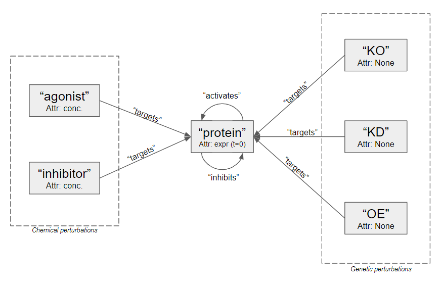

The Synthetic gnnCDR data object
Now that we've generated synthetic data, we need to organize it in a format conducive to graph neural networks. We will use pytorch_geometric to build our deep learning models, and use the HeteroData object to structure the training data.
We will format our synthetic data as a heterogenous graph with 6 node types:
- protein
- agonist
- inhibitor
- KO (knockout)
- KD (knockdown)
- OE (overexpression)
and 7 edge types: - (agonist, targets, protein) - (inhibitor, targets, protein) - (KO, targets, protein) - (KD, targets, protein) - (OE, targets, protein) - (protein, activates, protein) - (protein, inhibits, protein)
The genetic nodes do not have any node attributes and only target a single protein. The chemical perturbations have concentration node attributes (conc) and can target multiple protein nodes. Protein-protein edges can be of two types: "activate" and "inhibit". This is illustrated in figure 1 below.
 Figure 1: Graphic of our HeteroData object.
For programatic simplicity, we have opted to include all perturbation nodes in each observation graph, and specify active perturbations with non-zero node attributes. For chemical perturbations (agonist, inhibitor) this node attribute represents concentration. For genetic perturbations (KO, KD, OE), we use a arbitrary non-zero value of 1 to specify an active perturbation.
HeteroSynthDataset Object
We extend the pytorch_geometric Dataset object and create a HeteroSynthDataset which functions to parse the synthetic hdf5 file and produce individual observations of the form described above.
The perturbation indexing remains the same across all observations.
A dataset object can be initialized by:
dataset = SynthHeteroDataset('../../data/synthetic_data.h5',
indices=None,
zscore=False,
x_noise=None,
y_noise=None,
x_sparsity=None,
y_sparsity=None,
ppi_false=None,
dti_false=None,
ppi_missing=None,
dti_missing=None,
seed=None)
Passing an array of integers to indices (indexed by the synthetic_data.h5) will specfy what data will be included in the dataset. This can be used to specify train/test splits or filter observations.
Here are two examples of a returned data object.
perturbation:
agonist_2
HeteroData(
line=[1],
context=[1, 10],
time=[1],
baseline=[1, 100],
y=[1, 100],
pert_all=[1, 88],
pert_name=[1],
conc=[1],
pert_type=[1],
protein={
x=[100, 1],
y=[100, 1],
num_nodes=100
},
KO={
x=[26, 1],
num_nodes=26
},
KD={
x=[26, 1],
num_nodes=26
},
OE={
x=[26, 1],
},
...
(inhibitor, targets, protein)={
edge_index=[2, 18],
edge_attr=[18, 1]
}
)